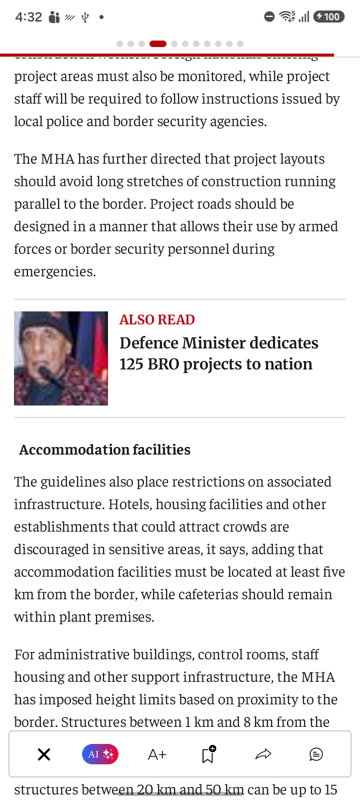
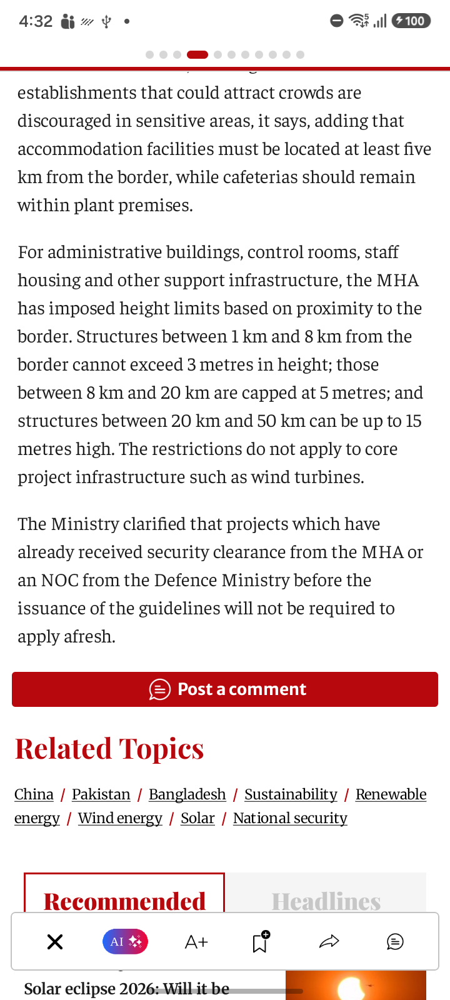
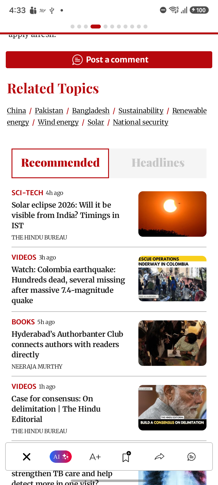
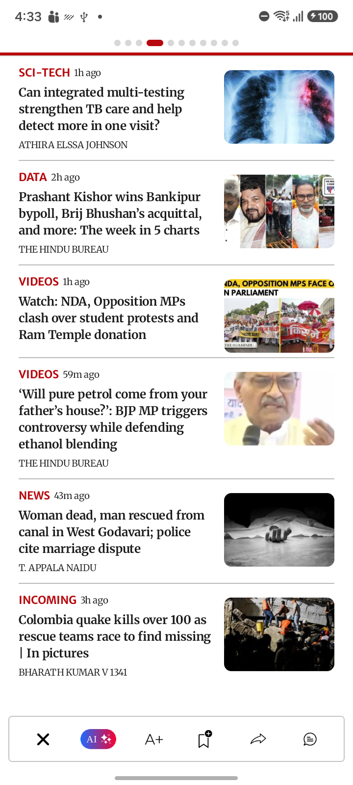

SC_80 — SC 80 World page article subsscribedAccount

Image: SC_80_World_Page_AI_Summary.png
Confidence: High Severity: LOW
Reason: All expected UI components are present and properly rendered. No visual defects are observed.
Image: SC_80_World_Page_Subscribed_Account_Article_01.png
Confidence: High Severity: LOW
Reason: All expected UI components are present and there are no visible layout, rendering, or navigation defects.
Image: SC_80_World_Page_Subscribed_Account_Article_02.png
Confidence: High Severity: LOW
Reason: All UI elements are rendered completely with no visible defects.
Image: SC_80_World_Page_Subscribed_Account_Article_03.png
Confidence: High Severity: LOW
Reason: All visible UI components are correctly rendered and aligned. No blank regions, overlaps, or rendering defects are present.
Image: SC_80_World_Page_Subscribed_Account_Article_04.png
Confidence: High Severity: LOW
Reason: All expected UI components are present and rendered correctly. There are no visual defects.
Image: SC_80_World_Page_Subscribed_Account_Article_05.png
Confidence: High Severity: LOW
Reason: All UI components are correctly rendered with no visible defects or missing content.

Image: SC_80_World_Page_Subscribed_Account_Article_06.png
Confidence: High Severity: LOW
Reason: All expected UI elements are present and rendered correctly with no visible UI defects.

Image: SC_80_World_Page_Subscribed_Account_Article_07.png
Confidence: High Severity: LOW
Reason: All expected UI components are present and correctly aligned. No visible UI defects.

Image: SC_80_World_Page_Subscribed_Account_Article_08.png
Confidence: High Severity: LOW
Reason: All expected UI components are present and fully rendered. No visible layout, rendering, or text issues.
Image: SC_80_World_Page_Subscribed_Account_Article_09.png
Confidence: High Severity: LOW
Reason: All UI components are rendered correctly with no visible defects.

Image: SC_80_World_Page_Subscribed_Account_Article_10.png
Confidence: High Severity: LOW
Reason: All expected UI elements are present and rendered correctly. No visual defects detected.

Image: SC_80_World_Page_Subscribed_Account_Article_11.png
Confidence: High Severity: LOW
Reason: All UI components are present and fully rendered with no visible defects.

Image: SC_80_World_Page_Subscribed_Account_Article_12.png
Confidence: High Severity: LOW
Reason: All expected UI components are present and properly rendered. No visible UI defects.
Image: SC_80_World_Page_Subscribed_Account_Article_13.png
Confidence: High Severity: LOW
Reason: All expected UI components are present and rendered correctly. No visible UI defects.

Image: SC_80_World_Page_Subscribed_Account_Article_14.png
Confidence: High Severity: LOW
Reason: All expected UI components are present and properly aligned. No visual defects detected.

Image: SC_80_World_Page_Subscribed_Account_Article_15.png
Confidence: High Severity: LOW
Reason: All UI components are rendered correctly with no visible defects. No unexpected blank areas or layout issues.

Image: SC_80_World_Page_Subscribed_Account_Article_16.png
Confidence: High Severity: LOW
Reason: All UI components are fully rendered and correctly aligned with no visible defects.

Image: SC_80_World_Page_Subscribed_Account_Article_17.png
Confidence: High Severity: LOW
Reason: All UI components, cards, images, text, and navigation elements are rendered correctly with no visible defects.

Image: SC_80_World_Page_Subscribed_Account_Article_18.png
Confidence: High Severity: LOW
Reason: All expected UI elements are rendered properly with no clear evidence of visual defects.

Image: SC_80_World_Page_Subscribed_Account_Article_19.png
Confidence: High Severity: LOW
Reason: All UI components are rendered completely with no visible defects or layout issues.

Image: SC_80_World_Page_Subscribed_Account_Article_20.png
Confidence: High Severity: LOW
Reason: All expected UI components are present and properly rendered with no visible defects.

Image: SC_80_World_Page_Subscribed_Account_Article_21.png
Confidence: High Severity: LOW
Reason: All expected UI components are present and correctly rendered. No visible UI defects.

Image: SC_80_World_Page_Subscribed_Account_Article_22.png
Confidence: High Severity: LOW
Reason: All expected UI components are present with complete rendering and no visible defects.

Image: SC_80_World_Page_Subscribed_Account_Article_23.png
Confidence: High Severity: LOW
Reason: All expected UI components are present and properly rendered. No layout, rendering, or text issues detected.
Image: SC_80_World_Page_Subscribed_Account_Article_24.png
Confidence: High Severity: LOW
Reason: All expected UI elements are present and rendered correctly. No visual defects observed.